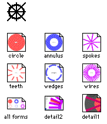
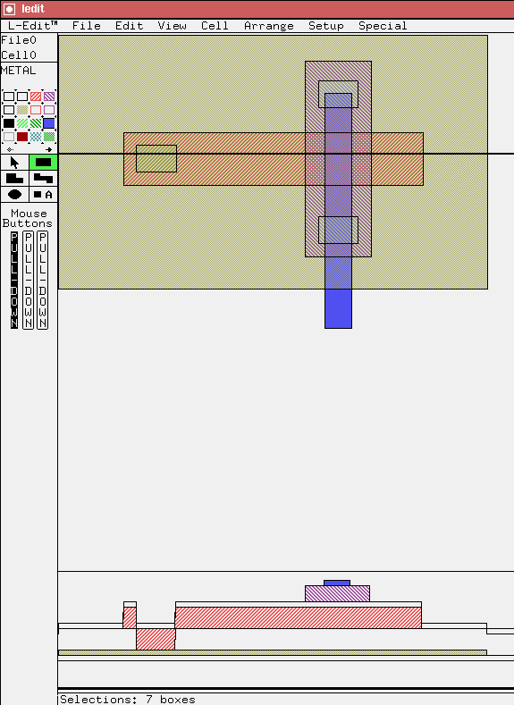

Layout Editor Documentation
L-Edit Overview
L-Edit Screen Example
L-Edit low resolution mask generation
Hints on using L-Edit
CircCIF: Dartmouth software for generating circular and radial features in manhattan and polygon geometry.
Alternative layout editors:
- Magic (available on unix workstations (northstar) at Dartmouth).
- IntelliCAD (not available at Dartmouth)
- U. Idaho List of VLSI CAD
- LASI PC based shareware device layout editor (including GSDII, CIF output, DXF import).
Running L-Edit on various platforms at Dartmouth
Layout Editor files and examples
-

-
MCNC ftp site (for technology files
mpmems.tdb and
mpmems.xst).
-
Consolidated Micromechanical Element Library
(CaMEL)
-
Grabbing a GIF image of an L-Edit layout

- CircCIF is a Macintosh application which writes circular, annular, and radial structures using staircase polygons to mantain Manhatten geometry. It will also write such structures as non-Mahattten angled polygons. This application was written at Dartmouth.
L-Edit Overview
L-Edit is an easy to learn draw type LAYOUT EDITOR from Tanner Research. While it is primarily a VLSI design tool, it is also flexible enough to do micromachining design, printed circuit board layout, and other CAD work. The multipass display is particularly powerful (layers can be semi-transparent; where two layers overlap, a third color is produced), as is the hierarchy of cells and layers. Changes to a cell (or group) are propagated to all instances and arrays of that cell. The drawing tool pallet includes standard tools and supports right angle, 45 degree, and all angles modes (unusual for VLSI CAD programs).
L-Edit/DRC (only two keys) is L-Edit with a built in Design Rule Checker. DRC is to layout what a spelling checker is to a word processor--it indicates where your design may be faulty. It allows user programmable rules for automatic checking of widths, spacing, and overlaps.
L-Edit/Extract(only one key) is L-Edit with built in Device Extraction for VLSI design. It generates a circuit "netlist" from your layout. This allows you to simulate your circuit using SPICE.
L-Edit is used at Dartmouth in research, and in courses (ES65, ES68, ES130, and ES136), but it is a flexible CAD program which we hope others will also find useful. In addition to this Macintosh version, Dartmouth has a single license for L-Edit/DRC/Extract on a hp unix workstation(Germain), and several student PC version copies on some NEC (80486) computers at Thayer.
A textbook has been published on VLSI design using L-Edit; it is available at the bookstore and includes a PC student version of L-Edit. The book is "Physical Design of CMOS Integrated Circuits using L-Edit" by John P. Uyemura.
L-Edit Screen Example

|
|
Dartmouth Engineering | Microengineering Lab |